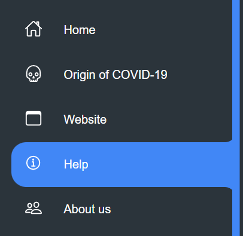

<!DOCTYPE html>
<html xmlns="http://www.w3.org/1999/xhtml"></html>
<head>
    <meta http-equiv="Content-Type" content="text/html; charset=utf-8" />
    <meta name="viewport" content="width=device-width,initial-scale=1.0">
    <title>HELP</title>
    <link rel="stylesheet" type="text/css" href="style.css">
    <script type="application/javascript">

        function blink()
        {
        //定義圖片的顯示和隱藏屬性
        tp.style.visibility = (tp.style.visibility=="hidden")?"visible":"hidden";  
        //每0.5秒刷新一次
        setTimeout("blink()",300);
        }

        function timeout()
        {
        //定義圖片的顯示和隱藏屬性
        tp.style.visibility = (tp.style.visibility=="hidden")?"visible":"hidden";  
        //每0.5秒刷新一次
        setTimeout("blink()",300);
        }
        </script>
</head>
<body style="background-color: #2b343b;">
    <h1 class="info">如何使用我們的網頁</h1>
    
    <p>
        <h2 style="color: white; position: absolute; left: 25%; top: 15%;">&nbsp; &nbsp; 這裡是我們的選單，您可以透過這個選單來跳轉頁面。</h2>
        <h2 style="color: white; position: absolute; left: 30%; top: 30%;">
            <li>
                Home
            </li>
            <h3 style="color: white; position: absolute; left: 30%; top: 35%;">&nbsp;&nbsp;&nbsp;&nbsp;這是回到首頁的選項。</h3>
            <h2>
            <li style="color: white; position: absolute; left: 30%; top: 42%;">
                Origin of COVID-19
            </li></h2>>
            <h3 style="color: white; position: absolute; left: 30%; top: 45%;">&nbsp;&nbsp;&nbsp;&nbsp;這是跳轉至COVID-19介紹頁面的選項。這裡將會介紹有關COVID-19的資訊。</h3>
            <h2>
            <li style="color: white; position: absolute; left: 30%; top: 52%;">
                Website
            </li></h2>>
            <h3 style="color: white; position: absolute; left: 30%; top: 55%;">&nbsp;&nbsp;&nbsp;&nbsp;這是跳轉至Website的選項。這裡將會介紹跟COVID-19有關網頁的資訊</h3>
            <h2>
            <li style="color: white; position: absolute; left: 30%; top: 62%;">
                About us
            </li></h2>>
            <h3 style="color: white; position: absolute; left: 30%; top: 65%;">&nbsp;&nbsp;&nbsp;&nbsp;這是跳轉至About us的選項。這裡將會介紹製作了這份網頁的資訊</h3>
        </h2>
        
    </p>
    <div class="navigation" style="position: absolute; top: 0; left: 0; height: 1080px;">
        <ul>
            <li class="list">
                <a href="index.html">
                    <span class="icom"><ion-icon name="home-outline"></ion-icon></span>
                    <span class="list">Home</span>
                </a>
            </li>
            <li class="list">
                <a href="originOf.html">
                    <span class="icom"><ion-icon name="skull-outline"></ion-icon></span>
                    <span class="list">Origin of COVID-19</span>
                </a>
            </li>
            <li class="list">
                <a href="web.html">
                    <span class="icom"><ion-icon name="browsers-outline"></ion-icon></span>
                    <span class="list">Website</span>
                </a>
            </li>
            <li class="list  active">
                <a href="help.html">
                    <span class="icom"><ion-icon name="information-circle-outline"></ion-icon></span>
                    <span class="list">Help</span>
                </a>
            </li>
            <li class="list">
                <a href="about.html">
                    <span class="icom"><ion-icon name="people-outline"></ion-icon></span>
                    <span class="list">About us</span>
                </a>
            </li>
            <li class="list">
                <a href="fbpage.html">
                    <span class="icom"><ion-icon name="thumbs-up-outline"></ion-icon></span>
                    <span class="list">Like us</span>
                </a>
            </li>
        </ul>
    </div>
    <script type="module" src="https://unpkg.com/ionicons@5.5.2/dist/ionicons/ionicons.esm.js"></script>
    <script nomodule src="https://unpkg.com/ionicons@5.5.2/dist/ionicons/ionicons.js"></script>
<script>
    //add active class in selected tab
    const list = document.querySelectorAll('.list');
    function activeLink(){
        list.forEach((item)=>
        item.classList.remove('active'));
        this.classList.add('active');
    }
    list.forEach((item)=>
    item.addEventListener('click',activeLink));
</script>
</body>